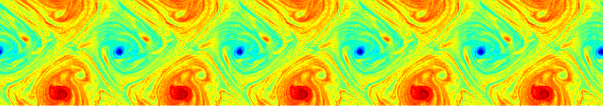

Seminário de Fluidos / IM-UFRJ
Este seminário é, em geral, realizado quinzenalmente, às sextas-feiras, 10:30h, no Instituto de Matemática da UFRJ, na sala C-116 do Bloco C do Centro de Tecnologia.
Para informações e sugestões, entrar em contato com o Professor Ricardo Rosa.

Programação
Abril 2013
- Sexta-feira, 19 de abril de 2013:
- Horário: 10h30
- Local: sala C-116
- Palestrante: Milton Lopes Filho (IM-UFRJ)
- Título: "Estabilidade não-linear de pares de vórtices espelhados"
- Resumo: Pares de vórtices espelhados são uma classe soluções tipo onda viajante para as equações de Euler bidimensionais. Existência de soluções deste tipo foi demonstrada por J. Norbury (1975) e por J. Yang (1991), usando técnicas associadas a problemas de autovalor não-linear e por G. Burton (1988) usando otimização em classes de rearranjos de vorticidade. Nosso objetivo é explorar a estabilidade orbital destas soluções usando uma extensão das técnicas utilizadas por Burton para demonstrar existência. Esta palestra contém resultados obtidos em colaboração com G. Burton e com H. Nussenzveig Lopes.
- Apresentação: PDF da Apresentação ``Nonlinear Stability of Vortex Pairs"
Maio 2013
- Sexta-feira, 3 de maio de 2013
- Horário: 10h30
- Local: sala C-116
- Palestrante: Jean-Pierre Puel (Laboratoire de Mathématiques de Versailles)
- Título: "Local exact controllability for viscous fluids. Some results and open problems"
- Resumo: In the recent years, the controllability problem for viscous incompressible fluids has been extensively studied, trying to answer J.-L. Lions' questions on the subject, and several results of local exact controllability to trajectories have been obtained. We will rapidly give the state of the art on this question.
Up to our knowledge, the corresponding problem for viscous compressible fluids has not been studied except in the last two years in a paper by Amosova and in an article written in collaboration by S.Ervedoza, O.Glass, S.Guerrero and J.-P.Puel and which is accepted in Archive for Rational Mechanics and Analysis. I will present this result in details.
We consider the system modeling a viscous compressible fluid in 1-d on a bounded interval $(0,L)$, namely the equations for the conservation of mass and of momentum. Particular stationary solutions are constant solutions $(\bar \rho, \bar u)$. We show that when $\bar u \neq 0$, if the initial datas $(\rho_{0}, u_{0})$ are in $H^{3}(0,L)$ and close enough to $(\bar \rho , \bar u)$, and if the time $T$ satisfies $T > L/(\bar u)$, there exists a solution $(\rho , u)$ to our system such that $(\rho , u)(0)=(\rho_{0} , u_{0})$ and $(\rho , u)(T)=(\bar \rho , \bar u )$. In this statement, we did not mention any boundary conditions. In fact the boundary conditions are the controls of our problem.
In order to obtain this result we use a fixed point argument for a mapping which is not linear but which decouples the controllability for $u$ and for $\rho$. In the definition of this mapping, in order to obtain controllability for $u$ we use Carleman estimates with an adapted weight after an extension of the domain, whereas to obtain controllability for $\rho$, we have to construct $\rho$ using backward and forward characeristics in a rather non standard way. Then, we have to obtain precise estimates in order to use a fixed point argument.
We will present the main steps of this result and some related open problems.
- Sexta-feira, 24 de maio de 2013
- Horário: 10h30
- Local: sala C-116
- Palestrante: Aibin Zang (Yichun University, China and a post-doc at IM-UFRJ)
- Título: "Vanishing Viscous Limits for 3D Navier-Stokes Equations
with a Navier-Slip Boundary Condition"
- Resumo: In this talk, I will present the vanishing viscosity limit for solutions to the Navier-Stokes equations with a Navier slip boundary condition on general compact and smooth domains in R^3. We first obtain the higher order regularity estimates for the solutions to Prandtl's equation boundary layers. Furthermore, we prove that the strong solution to Navier-Stokes equations converges to the Eulerian one in C([0,T]; H^1(\Omega)) and L^\infty((0,T)\times \Omega) is independent of the viscosity, provided that initial velocity is regular enough. Furthermore, rates of convergence are obtained also. This work is with Lizhen Wang and Zhoupin Xin and published in Journal of Mathematical Fluid Mechanics.
Junho 2013
- Sexta-feira, 7 de junho de 2013
- Horário:
- Local: não há sala disponível para o dia 7
- Palestrante: // //
- Título:
- Resumo:
- Sexta-feira, 21 de junho de 2013
- Horário: 10h30
- Local: sala C-116
- Palestrante: Alexei A. Mailybaev (IMPA, Rio de Janeiro)
- Título: "Blowup in inviscid shell models of convective turbulence"
- Resumo: We analyze the blowup (finite-time singularity) in inviscid shell models of convective turbulence. We show that the blowup exists and its internal structure undergoes a series of bifurcations under a change of shell model parameter. Various blowup structures are observed and explained, which vary from self-similar to periodic, quasi-periodic and chaotic regimes. Though the blowup takes sophisticated forms, its asymptotic small-scale structure is independent of initial conditions, i.e., universal. Finally, we discuss implications of the obtained results for the open problems of blowup in inviscid flows and for the theory of turbulence.
Julho 2013
- Sexta-feira, 5 de julho de 2013
- Horário: 10h30
- Local: sala C-116
- Palestrante: Henrique Versieux (IM-UFRJ)
- Título: "An iterative domain decomposition method for free boundary problems with nonlinear flux jump constraint"
- Resumo: We design an iterative domain decomposition method for free boundary problems with nonlinear flux jump condition. Our approach is related to damped Newton's methods. The proposed scheme requires, in each iteration, the approximation of the flux on (both sides of) the free interface. We present a Finite Element implementation of our method. The numerical implementation uses harmonically deformed triangulations to inexpensively generate finite element meshes in subdomains. We apply our method to a simplified model for jet flows in pipes [1] and to a simple magnetohydrodynamics model [2]. Finally, we present numerical examples studying the convergence of our scheme.
This is a joint work with J. Galvis.
References:
[1] H.W. Alt, L.A. Caffarelli, and A. Friedman. Jets with two fluids. i. one free boundary. In: Indiana Univ. Math. J., 33(2):213247, 1984.
[2] A. Friedman and Y. Liu A free boundary problem arising in magnetohydrodynamic system Ann. Scuola Norm. Sup. Pisa Cl. Sci., 22(3):375448, 1995.